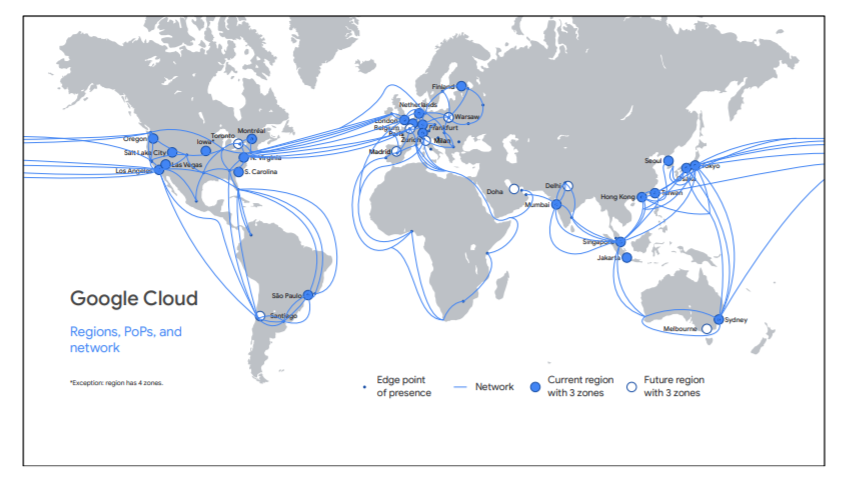
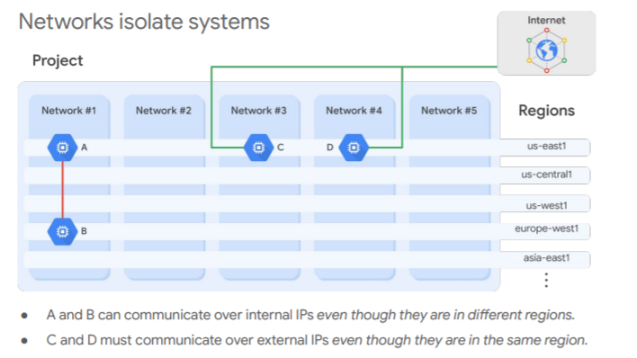
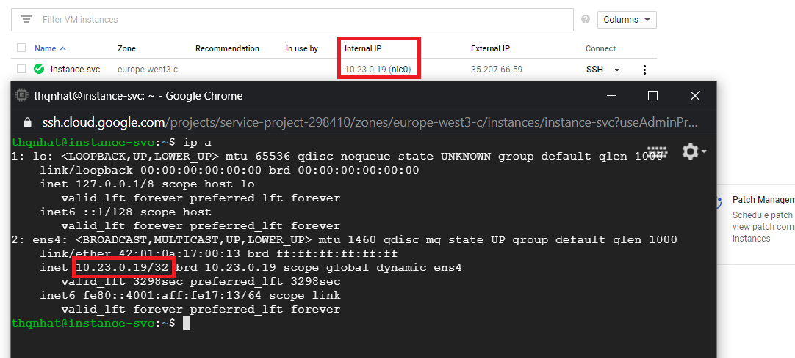
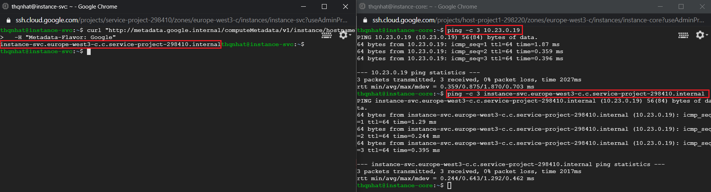
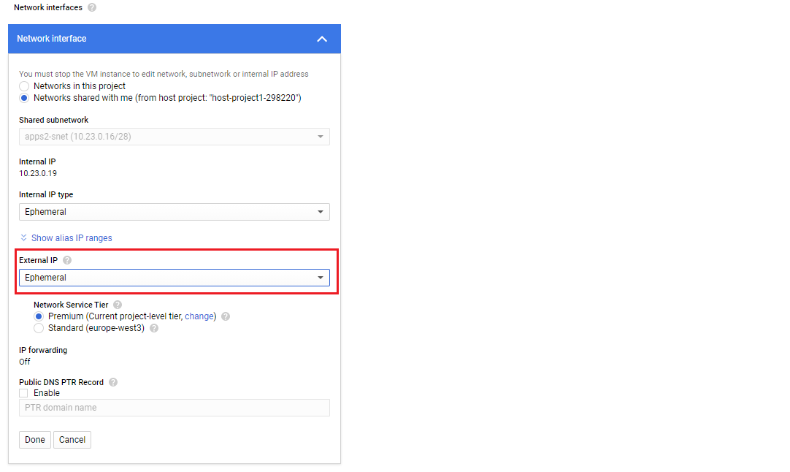
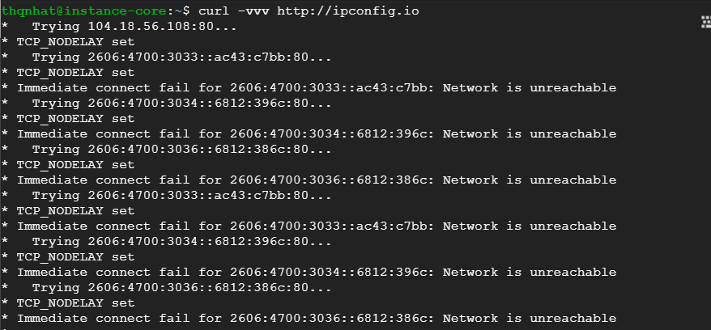
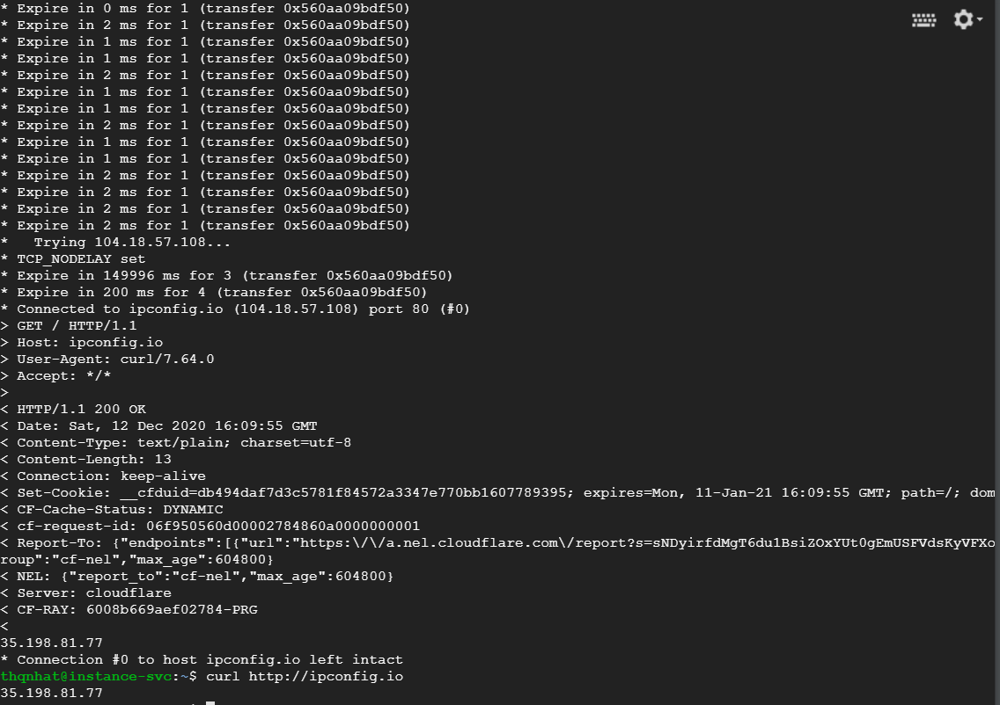
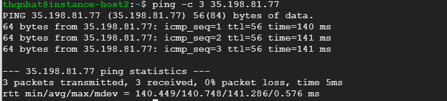
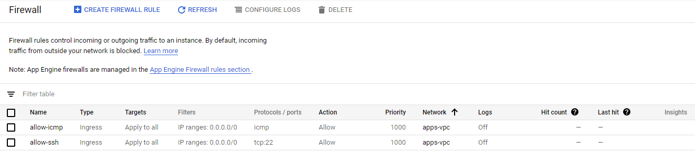
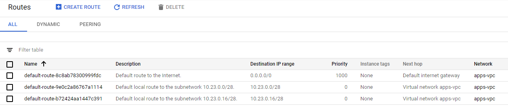

This is the first part of GCP’s serie. In this article, you will familiar with some of the basic terminology used in Google Cloud Platform (GCP).
Topics to cover:
- Google Cloud
- Projects and networks
- Internal IP and External IP
- DNS resolution for internal IP
- DNS resolution for external IP
- Cloud DNS
- Firewall
- Route
Google Cloud

Google Cloud consists of regions (icons in blue), points of presence or PoPs (dots in blue), a global private network (blue lines) and services.
A region is a specific geographical location that consists of zones. A zone is a deployment area for Google Cloud resources within a region. Google Cloud’s services and resources can be zonal, regional, multiregional or global.
Zonal resources:
Zonal resources are created and are operated within a single zone. If a zone becomes unavailable, all of zonal resources in that zone are unavailable until that zone is restored. For example, a Virtual Machine is a zonal resource.
Regional resources:
Regional resources are resources that are redundantly deployed across multiple zones within a region. For example, an App Engine application is a regional resource.
Multiregional resources:
Some Google Cloud services are managed by Google to be redundant and distributed within and across regions. For example: Datastore, Firestore, Cloud Storage, BigQuery,…
Global resources:
Global resources are resources that span all available regions. For example: Virtual Private Cloud.
The PoPs are where Google’s network is connected to the rest of the internet.
Projects and networks
Projects are the key organizer of infrastructure resources in GCP. A project may contain networks (up to 5 networks by default), subnetworks, firewalls, routes or other available resources in GCP. It associates the resources and services with billing.
A Virtual Private Cloud or VPC is Google’s managed networking functionality for your cloud resources. It has no IP address range and spans all regions (a global resource). A VPC can contain one or more subnetworks (or subnets).

Please note that private communication is scoped to the deployed VPC by default. It means that all virtual machines in the same network can communicate over internal IP (even if they are located in different regions).
In the above figure, A and B are on the same network (network #1). So, they can communicate privately using their internal IP or their internal DNS. Otherwise, C and D are on a different network (network #2 even if the same region), they must use the external IP (public IP) for the communication.
Internal IP and External IP
In GCP, each virtual machine (vm) can have two IP addresses assigned: internal IP and external IP. An internal IP is a private IP that allows private communication within the created network. An external IP or public IP is optional. This ip allows your vm to communicate with other resources/vms on a different network. The vm doesn’t know the external IP. The external IP is mapped to the internal IP.

DNS resolution for internal IP
When you create a vm instance, an internal DNS is also created and is mapped to your internal IP.
The internal DNS will be: [INSTANCE_NAME].[ZONE_NAME].c.[PROJECT_ID].internal
or you can run this curl to have this information:
-H “Metadata-Flavor: Google”

As you saw above, from another vm in the same network, you can use ping this vm using the internal DNS instead of internal IP.
Specifically, the name resolution, in this case, is handled by internal DNS resolver (169.254.169.254). For more information, please refer to this page https://cloud.google.com/compute/docs/internal-dns.
DNS resolution for external IP
If you need to communicate with another vm on a different network or go to the Internet, you may need an external IP. You need to be careful because this IP will be exposed to the Internet.

With an external IP, your vm can communicate with other services on the Internet.
Go to the Internet without the external IP: KO (by default). The additional configurations will be required to allow your vm to go to the Internet only with the internal IP. We will talk about it later.

Go to the Internet with the external IP: OK 
In that case, another vm on a different network(instance-host2) can reach out to your vm using the external IP.

If you would like an FQDN instead of an IP, you may consider using Cloud DNS to create your dns zones and dns records.
Cloud DNS
Google Cloud DNS is a scalable, reliable and managed authoritative Domain Name System (DNS) service running on the same infrastructure as Google.
It has low latency, high availability and is a cost-effective way to make your applications and services available to your users.
Cloud DNS translates requests for domain names like www.google.com into IP addresses like 74.125.29.101.
Firewall
GCP firewall rules protect your virtual machine instances from unapproved connections, both inbound (called also “ingress”) and outbound (called also “egress”).
Although firewall rules are applied to the network as a whole, connections are allowed or denied at the instance level. Therefore, firewall rules are not only between your instances and other networks but also between individual instances within the same network.
A firewall rule is composed of the following parameters:
| Parameter | Description | Example |
|---|---|---|
| direction | ingress for inbound connection and egress for outbound connection | ingress |
| source | ip address or service account of source | 10.0.0.1/29 |
| source port | * | |
| destination | ip address or service account of destination | 10.0.1.0/28 |
| destination port | 22 | |
| action | allow or deny | allow |
| priority | governs the order in which rules are evaluated. The first matching rule is applied | 1000 |

By default, every VPC network has two implied firewall rules. These rules exist, but are not shown in the Cloud Console:
- Implied allow egress rule. An egress rule whose action is allowed, destination is 0.0.0.0/0, and priority is the lowest possible (65535) lets any instance send traffic to any destination (Internet included). A higher priority rule may override this rule and restrict outbound access.
- Implied deny ingress rule. An ingress rule whose action is denied, source is 0.0.0.0/0, and priority is the lowest possible (65535). Therefore, the incoming connections to your instances are blocked by default. A higher priority rule may override this rule and allow incoming access.
Route
A route is a mapping of an IP range to a destination. Every network (VPC) has:
- Routes that let instances in a network send traffic directly to each other
- A default route that directs packets to the Internet (Default internet gateway)

For example, my VPC has two subnets (10.23.0.0/28 & 10.23.0.16/28). By default, three routes are created. One for each subnet and the default route to the Internet.